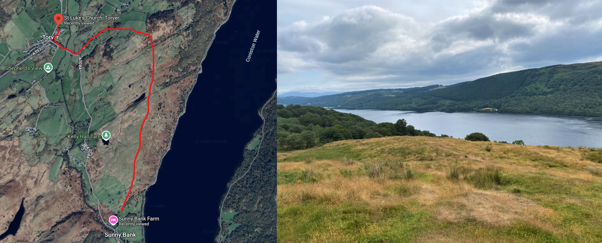
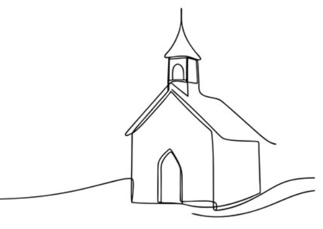
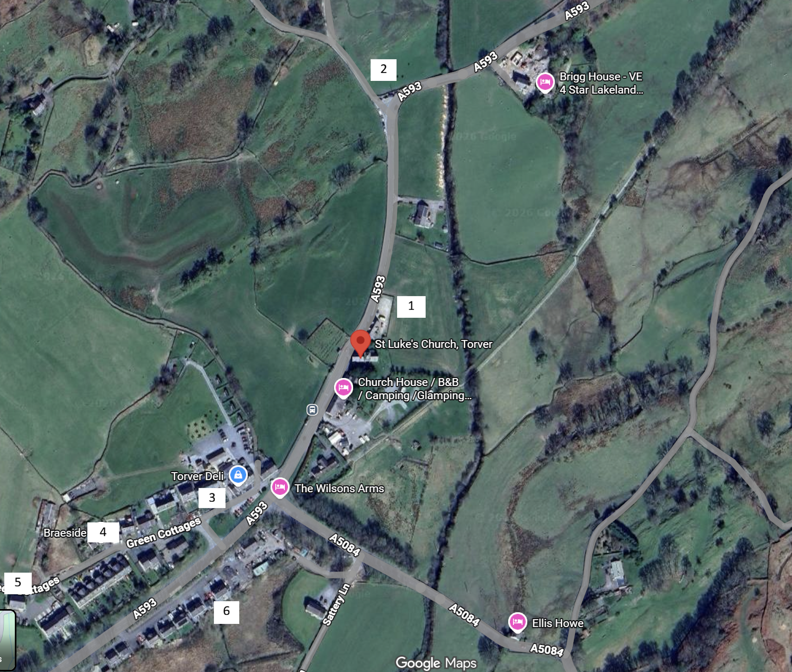

walking there and back again
If the weather is nice, the groomsmen will walk to and from the church via Torver Common. It's about a 40-minute walk each way across beautiful terrain with views over Coniston Water.
If you'd like to join us, wear something you can walk up a grassy (possibly muddy) hill in. Rhiannon will be also be walking back from the church to Sunny Bank Farm in her wedding dress and trainers.
If you'd like to join us, wear something you can walk up a grassy (possibly muddy) hill in. Rhiannon will be also be walking back from the church to Sunny Bank Farm in her wedding dress and trainers.


travel options
Your best route depends on where you're staying. Here are our recommendations for each area.
staying onsite
| To Church | To Reception | Home | |
|---|---|---|---|
| Option 1 most fun |
Walk to Church | Walk to Reception | Stumble |
| Option 2 easiest |
Drive to Church | Drive Home | Stumble |
The walk between the church and the farm is about 40 minutes across beautiful hills with views of the lake. Weather dependent — the wedding party will walk back from the church to the farm.
staying in the Torver area
| To Church | To Reception | Home | |
|---|---|---|---|
| Option 1 most fun |
Walk to Church | Walk to Reception | Taxi Home |
| Option 2 | Walk to Church | Walk to Reception | Walk Home |
| Option 3 easiest |
Walk to Church | Drive to Reception | Drive Home |
The walk home from the Torver area is about 25 minutes along the roadside. If you're walking back at night, please bring something visible and look for a ride share or taxi first.
staying in the Ambleside area
| To Church | To Reception | Home | |
|---|---|---|---|
| Option 1 easiest |
Drive to Church | Drive to Reception | Drive Home |
| Option 2 | Drive to Church | Walk to Reception (with the wedding party) |
Taxi Home |
| Option 3 most fun |
Drive to Reception | Walk with Wedding Party to & from Church | Drive Home from Reception |

church parking
There are a few parking options close to the church — please see the map below.


reception parking
There's a large field with plenty of parking space at the farm. Just follow the signs when you arrive — the entrance is clearly marked whether you're approaching from the north or south.
taxis & getting home
There's no Uber around Torver, so if you're planning to get a taxi please book well in advance. We don't have an end-time for the wedding as we're hoping to be the last ones standing, so please book a taxi whenever suits you!
Camping option — if you're planning a big night (we hope so!), let us know if you'd like to camp on the land. You'll have access to bathrooms, showers, and kitchens.
local taxi companies